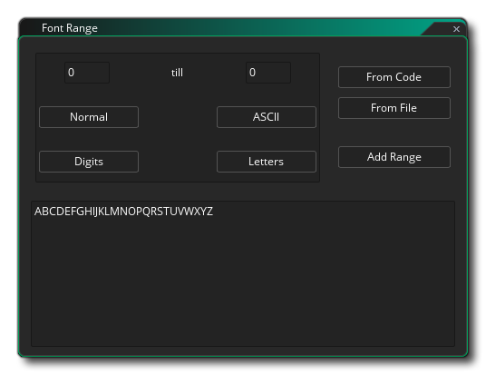

当你想在游戏中绘制文本时，此文本以标准 Arial 12 磅字体绘制，但为了制作更有趣或独特的文本，你可能需要使用不同的字体。因此，要使用计算机上的不同字体，必须在 GameMaker Studio 2 中创建 字体资源。这可以通过右键单击资源树中的“字体”文件夹并单击“创建”来完成。 你需要在资源树上的“字体”文件夹上右键点击
当你想在游戏中绘制文本时，此文本以标准 Arial 12 磅字体绘制，但为了制作更有趣或独特的文本，你可能需要使用不同的字体。因此，要使用计算机上的不同字体，必须在 GameMaker Studio 2 中创建 字体资源。这可以通过右键单击资源树中的“字体”文件夹并单击“创建”来完成。 你需要在资源树上的“字体”文件夹上右键点击 并点击“创建”。对于你创建的每个字体资源，你可以从计算机中指定特定类型的字体，然后可以使用动作或代码在游戏中设置使用该字体来绘图字体。
并点击“创建”。对于你创建的每个字体资源，你可以从计算机中指定特定类型的字体，然后可以使用动作或代码在游戏中设置使用该字体来绘图字体。
首次创建字体资源时，将打开字体编辑器窗口，其中包含以下选项：
在这里，你可以为你的字体指定唯一名称（字母数字字符和 “_” 下划线符号），以及选择要使用的字体。该字体必须安装在你的计算机上，并且由于许可问题，GameMaker Studio 2 默认情况下 不 会将实际字体文件与项目文件一起存储，而是将字体作为预渲染字形呈现给 纹理页。如果要在制作市场资产时将实际字体文件（仅限 *.ttf）与项目一起分发，则可以选中 在市场资产中包含字体 选项。这将打开文件资源管理器，你可以在其中选择字体文件，然后将其添加到与项目捆绑在一起的文件中。
重要说明：你应该在项目中只使用法律允许和许可的字体。
在这一部分中，你可以设置大小（以点为单位 - 默认为 12 pt）以及是应该将字体绘制为粗体还是斜体，或是应用了抗锯齿（边缘平滑）。右侧的预览窗口将显示预览文本，并且它将显示你指定的大小和变换。
如上所述（在 字体详细信息 一节中），默认情况下，所有字体字形都将呈现为纹理页面，作为 纹理组 的一部分，以将其转换为图形资源。字体编辑器的这一部分允许你选择要添加它们的组，并且在编译游戏时，将字体添加到临时纹理以创建具有所有需要字体字形的单个图像，然后 这个图像 将添加到主要纹理组以进行导出。请注意，如果你选择将字体文件作为游戏构建的一部分包含在内，则此选项将不执行任何操作。有关纹理组的更多信息，请参见 此处。
创建字体资源时，你很少需要包含字体的每个字形。这就是为什么 GameMaker Studio 2 默认只使用所选字体的 32 到 127 之间的字符，因为为我们提供了数字、小写和大写字母以及某些标点符号。但是，你可以更改用于帮助优化游戏的字符范围，即：如果你只需要特定字体的数字，则 只 需选择数字。要执行此操作，你应首先单击 删除 按钮以清除当前范围（你可能需要通过在预览窗口中单击
它来选择此工作范围），然后单击 添加 按钮以添加新范围。这将打开以下链接窗口：
此窗口有一些按钮可帮助你为字体建立标准范围：
- 正常： 范围为 32 到 127
- ASCII： 范围为 0 到 255
- 数字： 范围仅为 10 个数字
- 字母： 范围仅为大小写字母通过键入要在字符范围输入框中设置的范围的第一个和最后一个字符索引，可以使用其他范围（如果字符不在范围内则由空格替换）。除了这些按钮和输入框之外，你还有两个特别有用的选项：
- 从代码中获取： 如果你单击此按钮然后单击确定，GameMaker Studio 2 将自动解析你的游戏代码以获取字符串，然后创建不同的字符范围以覆盖游戏中的所有文本。 请注意，它会查找所有字符串（在双引号“”或单引号‘’内），因此也可能包含字符范围中的文件名。
- 从文件中获取： 这与上面解释的 “从代码中获取” 选项类似。如果你点击它，会要求你提供一个文件。 然后，GameMaker Studio 2 将解析文件并为其中的文本创建字符范围。
请注意，你可以通过直接在预览窗口中添加或删除文本字形来手动编辑文本范围。
你可以在预览窗口中键入要测试的任何文本。它将使用你选择的预设进行渲染。
此处列出了你添加的不同范围。范围值显示在左边，范围符号显示在右边。